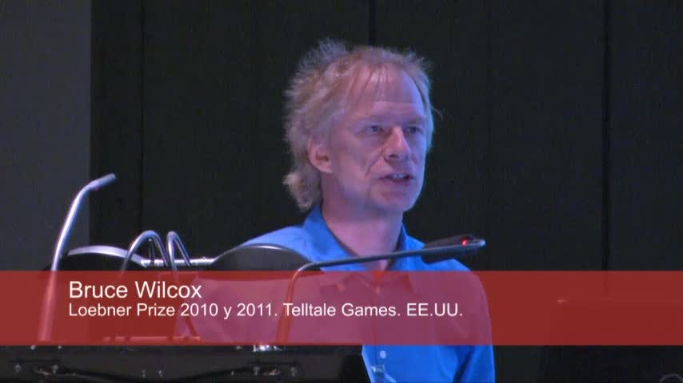

How to build your first chatbot using ChatScript
10–10–2018: article updated with new github repo url.
10–10–2018: article updated with new github repo url.
Chatbots can help you get things done right inside chat tools like Facebook Messenger, Telegram Messenger, Slack, etc, etc. Just say the word and your chatbot will deploy your latest build, or order you a pizza.
And there’s a special tool for building chatbots that’s been around for quite some time. It’s called ChatScript. And like Slack, it started out as just a small part of a video game.
Back in 2009, Bruce Wilcox was working as a game developer and artificial intelligence researcher. His wife, Sue Wilcox, wanted to model virtual characters for her interactive fiction games. Together, they built what ultimately became ChatScript.
This natural language processing engine + dialog flow scripting platform helped Bruce win the Loebner AI Prize three times.

Bruce still develops and maintains the project today. It’s written in C and C++, and is open source. In fact, version 6.8 just came out a few weeks ago.
ChatScript is one of few OPENSOURCE chatbots NLProc engines!
Let’s dive into the basics of ChatScript and meet a chatbot named Harry.
Installing ChatScript
Some of these steps may be a bit different depending on what operating system you’re using. I’m using Linux. You don’t actually have to go through these steps to enjoy this article if you don’t want to. Just read along.
Step 1: Install the system components on your local computer
First of all clone the ChatScript GitHub repository:
$ git clone https://github.com/ChatScript/ChatScript
This will create a ChatScript directory, which will contain these subdirectories:
$ cd ChatScript/
$ ls -d1 */
BINARIES/
DICT/
DOCUMENTATION/
LINUX/
LIVEDATA/
LOEBNERVS2010/
LOGS/
MAC/
RAWDATA/
REGRESS/
SERVER BATCH FILES/
SRC/
SUBLIME TEXT EDITOR/
TMP/
TOPIC/
USERS/
VERIFY/
VS2010/
VS2015/
WEBINTERFACE/
- DOCUMENTATION contains wiki documentation files.
BTW, I personally contributed to update all the original documentation in markdown format to be read online and from command line when developing.❤
- RAWDATA contains a subdirectory for each bot. By default, the platform comes with a default bot named Harry, who is located at RAWDATA/HARRY.
BTW, please remember to set LinuxChatScript64 executable:
$ chmod +x ChatScript/BINARIES/LinuxChatScript64Note: obviously here above I’ considering the Linux OS environment.
More info about Linux, MacOS or Windows installation here.
Step 2: To run CS engine in standalone mode:
$ BINARIES/LinuxChatScript64 localRunning the engine will launch Harry, with whom we can then talk:
ChatScript EVSERVER Version 6.8 64 bit LINUX compiled Aug 16 2016 17:35:43 host=local
Params: dict:720895 fact:800000 text:70000kb hash:50000
buffer:22x80kb cache:1x5000kb userfacts:100
WordNet: dict=201350 fact=85710 stext=12703744 Jul26'16-21:58:46
Build0: dict=67726 fact=130289 stext=1145656 Jul31'16-13:45:49 0
Build1: dict=167 fact=15 stext=211304 Jul31'16-13:45:44 harry
Used 53MB: dict 269,244 (23693kb) hashdepth 18/1 fact 216,014 (8640kb) text 14183kb
buffer (1760kb) cache (5000kb) POS: 918 (29kb)
Free 79MB: dict 451,651 hash 924 fact 583,986 text 55,816KB
Enter user name: giorgio
HARRY: Welcome back
giorgio: > what is your name ?
HARRY: My name is Harry.
giorgio: > who is Bruce Wilcox?
HARRY: Bruce Wilcox (born 1951) is an artificial intelligence programmer.
giorgio: > ok, I have to go
HARRY: Indeed.
giorgio: > :quit
Exiting ChatScript via Quit
$
Step 3: Code and debug your chatbot scripts
Standalone mode makes for an excellent ChatScript development environment. It allows you to run interactive conversations, then interact with them using :commands. This is a special set of interactive command tools for testing and debugging your dialogs during the development and debug phase.
Here are a few example commands:
# recompile the bot Harry and reset the status of conversations with user giorgio
giorgio: > :build Harry
giorgio: > :reset
# request statistics about topic ~pets
giorgio: > :topicstats ~pets
~pets gambits 2 responders 2 rejoinders 5 empties 0
Concepts 1860 Topics 1 rules 9 empties 0
gambits 2 responders 2 (?: 2 s: 0 u: 0) rejoinders 5
# conversation ...
giorgio: > do you like snakes?
HARRY: I love pythons except ^"Python" (the programming language)
# ask the reason why a rule fired
giorgio: > :why
~pets.2.0.5.9.0 ?: ( << you like snake >> ) I love pythons except Python ( the programming language )
via ~control.5.9.0 u: ( ) $$currenttopic = %topic ^if 00m( %response 0 ) 00I{ ^nofail ( TOPIC ^rejoinder ( ) ...
Note that you can run :commands to show the full list of available commands.
Topics are contained in specific files. For example, the ~pets topic code is contained in pets.top file, which looks like this:
topic: ~pets (dog cat pet animal bird fish snake)
?: ( << you like snake >> )
I love pythons except ^"Python" (the programming language)
?: ( << you ~like ~animals >> )
I love all animals.
t: Do you have any pets?
#! yes
a: ( ~yes ) Great. You like animals.
#! no
a: ( ~no ) You don’t like animals?
#! I have two parrots
a: ( parrots ) Birds are nice.
#! I have a cat
a: ( cat ) I prefer dogs
#! I have a canary
a: ( [parrot bird canary finch swallow] ) Birds are nice.
t: I have a dog.
ChatScript is a rule-based engine, where rules are created by humans writers in program scripts through a process called dialog flow scripting. These use a scripting metalanguage (simply called a “script”) as their source code.
Here what a ChatScript script file looks like:
#
# file: food.top
#
topic: ~food []
#! I like spinachs
s: ( I like spinach )
Are you a fan of the Popeye cartoons?
a: ( ~yes )
I used to watch him as a child. Did you lust after Olive Oyl?
b: ( ~no ) Me neither. She was too skinny.
b: ( ~yes ) You probably like skinny models.
a: ( ~no ) What cartoons do you watch?
b: ( none ) You lead a deprived life.
b: ( Mickey Mouse ) The Disney icon.
#! I often eat chicken
u: ( ![ not never rarely ] I * ~ingest * ~meat )
You eat meat.
u: ( !~negativeWords I * ~like * ~meat ) You like meat.
?: (do you eat _ [ ham eggs bacon])
I eat ‘_0
?: (do you like _* or _*)
I don’t like ‘_0 so I guess that means I prefer ‘_1.
s: ( ~like ~fruit ![~animal _bear] )
Vegan, you too...
?: (do you eat _~meat)
No, I hate _0.
s: ( I eat _*1 >)
$food = ‘_0
I eat oysters.
You can define your bot’s dialog flows with a script stored as a normal text file. This is much simpler than methods that other chatbot tools use, which often involve browser-based user interfaces, JSON, or XML.
Writing your scripts as a text files gives you full control over your dialog flows. You a can easily process and upgrade your conversational code with back-end scripts and tools.
For example, you could automatically update ChatScript dialog rules based on records in your database.
You could even use machine learning tools to mine conversations logs. This could reveal all kinds of opportunities for you to improve your dialog flows.
But these are topics for a future ChatScript article. I’ll leave you to go play with ChatScript on your own.
Please contribute to its open source codebase, and star it on GitHub!🌟🌟🌟🌟🌟